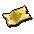
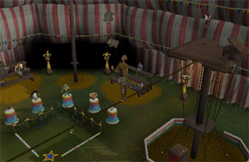
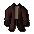
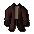
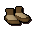
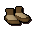

")
Balthazar Beauregard's Big Top Bonanza
Big Top Bonanza is only accessible to RuneScape members. Please subscribe to get this feature.
Introduction

Unfortunately, the circus is a little short of performers, and the audience is restless... Are you willing to risk life, limb and ridicule to quell the crowds?
Requirements
There are no specific requirements to take part in Balthazar Beauregard's Big Top Bonanza, but having higher Agility, Magic and Ranged levels will certainly help you get the most fabulous rewards.
Getting Started

You can find out where the circus has moved to by listening to the circus criers - a motley selection of would-be performers - who can be found in the busiest locations of major towns and cities. In addition, you can try looking for the diversion icon on your world map.
 If you happen to see the ticket vendor, click on it to be given a golden ticket and teleported into the main ring, where the astoundingly huge, loud and impressive Ring Master awaits. This is Balthazar Beauregard, and a more brilliantly bombastic individual you are unlikely to find.

Each type of act you can take part in grants improved experience over comparable training options, and no equipment is required as the circus will supply everything you need. In addition to this, it's worth bearing in mind that wearing a costume and using your emotes regularly while performing may increase the audience appreciation (and your rewards, of course).
There are three different acts you can perform in:
- Magic
The magic show requires you to perform a few simple tricks to impress the incredibly gullible audience. - Ranged
Hurling sharp objects at a spinning target with an assistant attached to it has long been a circus staple - just try to make sure they can walk home. - Agility
The tightrope is suspended high above Balthazar's head, and is simply begging for someone to stand upon on it, cartwheel across it, and plummet to...or simply to juggle chinchompas.
Magic Show

- You can cast alchemy and teleportation spells in the north-east corner.
- You can cast elemental spells in the north-west corner.
- You can cast levitation spells in the south-east corner.
You must cast ten spells during your show. Pay attention to audience requests, as well as the Magic level required to cast a spell on an object (which you can see when you hover your mouse over it), and mix some emotes into your performance to keep it fresh and maximise your score.
Ranged Display

When you have your weapon of choice, you can choose the distance you want to fire from by clicking on the stars or popinjay symbols on the ground. As always, mix the range you fire from and throw in some emotes to maximise your score.
Tightrope

You can take a selection of juggling items from the chest you find at the top of the pole, and then begin your dazzling display by walking out onto the rope. While you are walking upon the thinnest of ropes, your equipped inventory tab will display all of the tricks you can attempt, arranged in difficulty from simplest to hardest.
You must perform ten stunts during your show. Using emotes between stunts, not repeating the same tricks twice and listening to audience requests will garner you the most fabulous rewards.
Rewards
At the end of each performance, Balthazar Beauregard will tell you how well you have done and give you a reward. The reward depends on the score you get, so it's definitely worth trying out new things, as well as getting your skill levels high enough that you don't have to repeat tricks. As an added note, some locations have a specific audience with specific things that entertain them, so it's a good idea to experiment and find out what sorts of things will amuse the audience you're performing for.
The items you could receive are as follows:
| Score | Costume Rewards |
| 1 - 500 |   
  
     
  
        Male and female audience costumes |
| 501 - 1000 |         Male and female acrobat costumes |
| 1001 - 1200 |      Clown costume |
| 1201+ |      Ringmaster costume |
Development Team
Developer: Nancy J
Graphics: Wayne M, Giuseppe G, Matthew N, Matthew S, James W, Daniel J
QA: Chris L, Chris E
Audio: Grace D

More articles in
Distractions and Diversions
|
|
|
Further Help
If this article does not help you, you may find the following sections of the RuneScape site helpful:
|
|